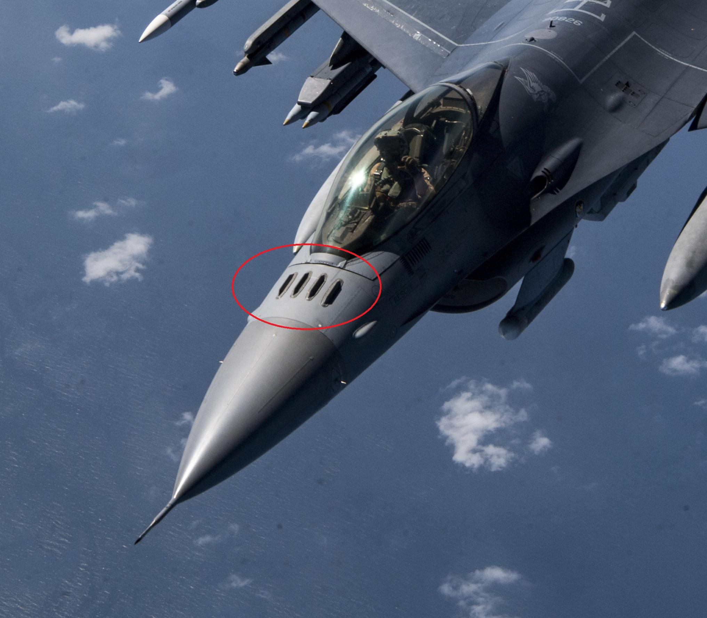
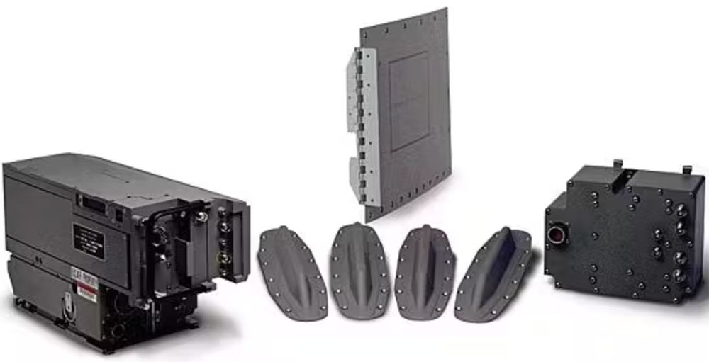
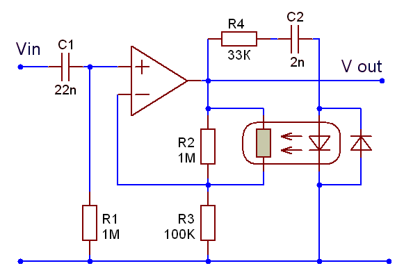
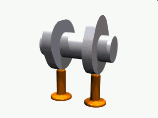
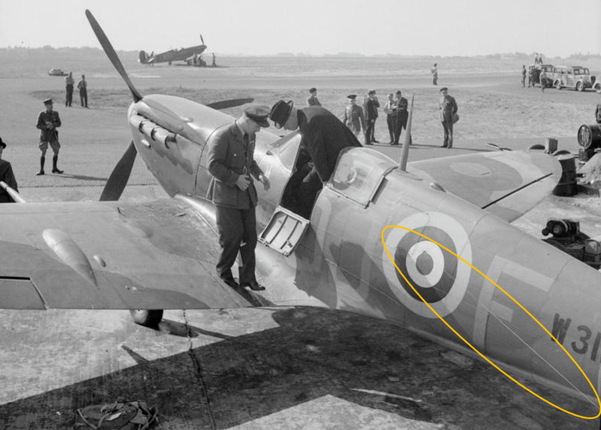
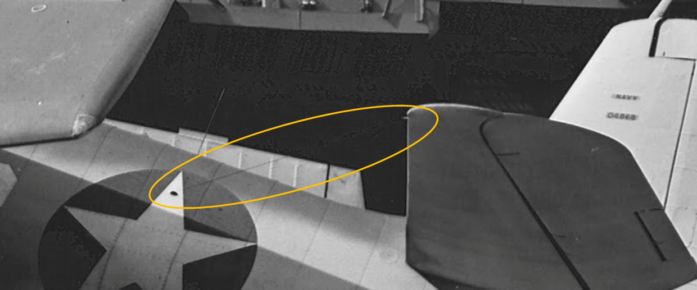

WW2의 IFF 이야기 (3) - 해결책은 영국으로부터
게시: 2024-12-05T06:30:48+09:00
지난 편에서 언급한 SK-1 레이더 안테나 윗부분에 설치된, 세로 방향으로 배치된 4개 쌍극자의 정체는... 짐작하셨듯이 IFF (identification friend or foe) 안테나. 현대적인 IFF는 interrogator와 transponder의 2개의 요소로 구성됨. 즉, '너 우리편이니?'라고 묻는 신호를 발신하는 장치와, 그 신호를 받을 경우 '나 니네편 맞아'라고 답신을 보내는 장치가 있음. 보통은 이 두 장치가 하나로 결합된 시스템을 사용.

(F-16 전투기의 콧잔등에 있는 저 빗금 같은 세로줄이 IFF 안테나)

(이 사진은 2013년 BAE Systems Electronics & Systems가 미공군에 공급하기로 계약한 AN/APX-125 F-16 Mode 5 advanced identify friend-or-foe (AIFF) 장치 세트. 총 336개 세트를 공급하는데 그 계약가는 $34.3m USD, 즉 한 세트에 대략 10만불 정도. 그러니까 지금 원화 가치로 한 세트에 1억4천만원. 싸다! 완전 거저네!) 그런데 IFF가 처음부터 저렇게 interrogator와 transponder로 이루어졌던 것은 아니고, 처음에는 transponder만 있었음. 이유는 초기에는 레이더파 자체를 interrogating signal로 썼기 때문. 원래 레이더 그 자체처럼, IFF도 영국 로열 에어포스에서 먼저 고안하여 사용하던 것. 영국은 레이더 기술의 원조 나라답게 처음부터, 심지어 최초의 실용 레이더망인 Chain Home 시스템이 구축되기 훨씬 전인 1935년 경부터 IFF의 필요성과 원리에 대해 연구를 시작. 처음에는 아군기에 일종의 '전파 반사판'(reflector) 역할을 하는 작은 쌍극자 안테나(dipole)을 달고, 아군 레이더파를 더 크고 강하게 반사하는 아이디어를 냈음. 거기에 전기모터로 작동되는 on/off 스위치를 달아서 나름대로의 패턴 신호를 반사파로 보내면, 아군 레이더망에서 그런 특유의 패턴 신호를 내는 항공기는 아군기라고 볼 수 있다는 개념. 그러나 이 Mark I은 안테나 방향 등에 따라 gain (이득, 전기 신호를 받아서 증폭 시켜 내보내는 비율)이 너무나 불안정하여 신호 크기의 편차가 너무 크거나 아무 신호가 반사되지 않는 등 문제가 많았음. 게다가, 처음에는 영국의 방공 레이더가 하나의 주파수만 썼으므로 별 문제가 없었으나, 점점 다양한 주파수를 사용하게 되었는데, Mark I은 하드웨어적으로 고정된 딱 하나의 주파수에 대해서만 반응하였으므로 사실상 쓸 수가 없었음. 결국 포기. 덕분에 개전 초기에는 정식 IFF 대신, 일전에 Huff-Duff를 소개할 때 언급했던 pip-squeak 장치를 이용하여 레이더 말고 Huff-Duff 전파 방향 탐지기를 이용하여 피아를 구분. ( https://nasica1.tistory.com/813 참조) 그러나 이렇게 Huff-Duff를 이용한 피아 구분은 가뜩이나 힘든 레이더 관제 업무를 더욱 힘들게 하는 노동집약적 작업이라서, 그대로 계속 사용하는 것은 어려웠음. IFF Mark I의 포기 이후에도 로열 에어포스는 계속 Mark II의 개발에 매진하여 Mark I의 두 가지 문제, 즉 gain의 효과적인 제어와 다양한 주파수에 대해 어떻게 대응할지를 모두 해결. Gain의 제어를 위해서는 당시 이미 상용으로 많이 쓰이던 라디오의 automatic gain control (AGC, 자동 이득 제어기)를 활용. 우리가 라디오를 듣는 위치는 송신국에서 가까울 수도, 멀 수도 있으며 또 송신국과 우리 라디오 사이에 아무 장애물이 없을 수도 있지만 산이 있을 수도 있고 콘크리트 벽이 있을 수도 있음. 그러나 잡음이 좀 있더라도, 최소한 나오는 음향의 크기는 장소와 지형지물에 따라 크게 다르지 않고 일정. 그게 가능한 이유가 바로 라디오에서 AGC를 이용하기 때문. AGC는 일련의 진공관과 콘덴서(capacitor)를 이용하여 신호의 입력값이 어떻든 간에 출력값은 평균 출력값에 수렴하도록 해주는 회로 장치. 이를 이용하면 IFF에서 레이더로 보내주는 신호 패턴을 원하는 크기로 일정하게 조정이 가능.

(Automatic gain control의 일반적 회로도라는데, 나는 보고도 검은 건 전선이요 하얀 건 종이라는 것 말고는 못 알아보겠음.) 여러가지 레이더의 다양한 주파수에 대해 어떻게 대응할지 여부는 다소 복잡. 모든 종류의 레이더 전파에 대해서도 응답을 하기 위해서는 해당 주파수들에 대해 감지를 하고 있어야 했음. 해당 주파수마다 IFF 장치를 하나씩 두는 것은 너무 비효율적. 결국 Mark II가 채택한 방식은 전기 모터와 cam(비대칭형 바퀴로 된 회전 운동을 왕복 운동으로 바꾸는 장치)을 이용하여 몇 초 간격으로 3종류의 넓은 대역폭 사이를 오가며 다양한 주파수로 날아오는 신호가 있는지 감지하는 것. 이런 방식의 Mark II는 1939년에 개발 완료되고 주문되었으나 제조도 느렸고 특히 완성품이 있더라도 가뜩이나 바쁜 전투기들에게 설치할 시간이 없어서 제대로 사용이 시작된 것은 1년이 지난 1940년 말부터.

(Cam이라는 것은 바로 이런 물건)

(주황색 타원형 속에 보이는 로열 에어포스 Supermarine Spitfire에 설치된 IFF Mark II의 안테나. 원형 국적 마크인 라운델(roundel)에서 삐져나온 가느다란 와이어가 꼬리 수평타의 끝에 연결되어 있음. 물론 항공기 좌우에 한 쌍의 안테나가 존재.)
이 기술은 영국과 미국이 레이더를 포함한 첨단 군사기술을 교환했던 Tizard mission에 의해 미국으로도 전파됨. 과달카날 전투 등에서 사용된 IFF가 바로 영국제 IFF Mark II에 기반한 장치들.

(초기형 F6F의 IFF Mark II. 역시 라운델에서 꼬리 수평타까지 이어진 와이어가 주황색 타원형 속에 보임.)
그러나 이 Mark II에 대해서도 미해군은 불만이 많았음. 고장도 잦고, 제대로 작동을 안 하는 경우가 많았기 때문. 가령 적기가 IFF를 장착한 아군기와 약 5도 이하의 각도에 놓여있을 경우, 아군기의 IFF 신호에 의해 적기의 존재가 가려진다는 것이 나중에야 알려짐. 또 적기가 아군기와는 완전히 다른 각도에 있다고 하더라도, IFF를 장착한 아군기와 동일한 거리에 있다면 그 적기도 아군기로 인식되는 문제가 발생. 게다가 SK-1, SC-2 등 새로운 모델의 레이더가 마구 쏟아져 나오고, 특히 cavity magnetron을 이용한 GHz 단위의 레이더들까지 개발되면서 기존의 몇몇 대역폭의 주파수를 오가며 신호에 반응하던 Mark II로는 감당이 안 될 지경에 놓임. 여기에 대해 솔루션을 내놓은 것도 역시나 영국. (다음 주에 계속...)